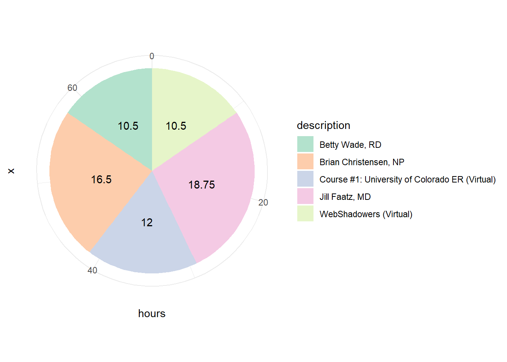

Shadowing
Pie Chart
As of June 22, 2023, I have been involved in 68.25 hours of shadowing.
Betty Wade, RD
Description
Dr. Wade is a Registered Dietitian and Certified Diabetes Educator practicing in the Heber Valley Clinic. You can find more about Dr. Wade at this link
Learnings
I spent 1/3/23 and 1/4/23 with Dr. Wade. Follow the links in order to see what I learned while spending time with her.
Brian Christensen, NP
Description
Dr. Christensen is a Nurse Practitioner practicing in the Utah Valley Hospital. You can find more about Dr. Christensen at this link
Learnings
I spent 12/21/22 and 1/5/23 with Dr. Christensen. Follow the links in order to see what I learned while spending time with him.
Course #1: University of Colorado ER (Virtual)
Description
This virtual shadowing Canvas course, made available through the Department of Emergency Medicine at the University of Colorado, gave me an opportunity to watch how people practice medicine in a different place in the world than I am used to. In this first course, there were 9 Cases, and after each case there was a quiz regarding things that were covered in the video case. The cases covered were across a broad range: pregnancy and asthma, travelers’ diarrhea, epilepsy, gastritis, heart attack, hematoma, anaphylaxis, COVID, and renal failure. The videos were given through a mock-visit with a patient, where the physician first meets the mock patient and cares for them as they would a typical patient. Essentially, we viewers were a fly on the wall who could see the whole process of treating these patients. You can learn more about this awesome course here. I finished this course over 1 month, averaging 3 hours a week going through this shadowing experience. Click here to download the certificate I was granted.
Learnings
With my service in the American Fork Emergency Room, I felt like I had a decent grasp on how emergency rooms worked already. This shadowing opportunity gave me new insights into the treatment of patients in the ER. In my experience, I usually saw the tests and labs being run, with me checking on the patients where I was able. Rarely, there was the major trauma patient that came in, and when that happened, I could see how the physicians quickly cared for that patient. This shadowing experience let me see what initial contact with a patient and physician would look like, depending on the case and the symptoms. Not every case was a major trauma, and therefore, the ability to collect information from the patient and think quickly on their feet was shown to me. I felt like it showed me how to create trust with a patient from the beginning, and it was very informative. I think it gave me a really good background for in person shadowing experiences.
Jill Faatz, MD
Description
Dr. Faatz is a family care specialist practicing in the Heber Valley Clinic. You can find more about Dr. Faatz at this link
Learnings
I spent 12/27/22 and 12/29/22 with Dr. Faatz. Follow the links in order to see what I learned while spending time with her.
WebShadowers (Virtual)
Description
This Youtube channel was created at the beginning of COVID with the goal of providing med students opportunities to shadow despite the ongoing pandemic taking over the medical world. The general process of the shadowing experiences included an introduction of the physician and the profession, running through a case or two that the physician has seen, and general questions and answers afterwards. These were given during a livestream, but I was able to watch it afterwards due to them being recorded. Each of the experiences took roughly 1.5 hours after I created a write up.
Learnings
For these videos, I decided to write a report after each session, focusing on what I liked about the profession, what I liked about the physician, what was difficult to be excited about for the profession, and what I learned. These can be found at this link.